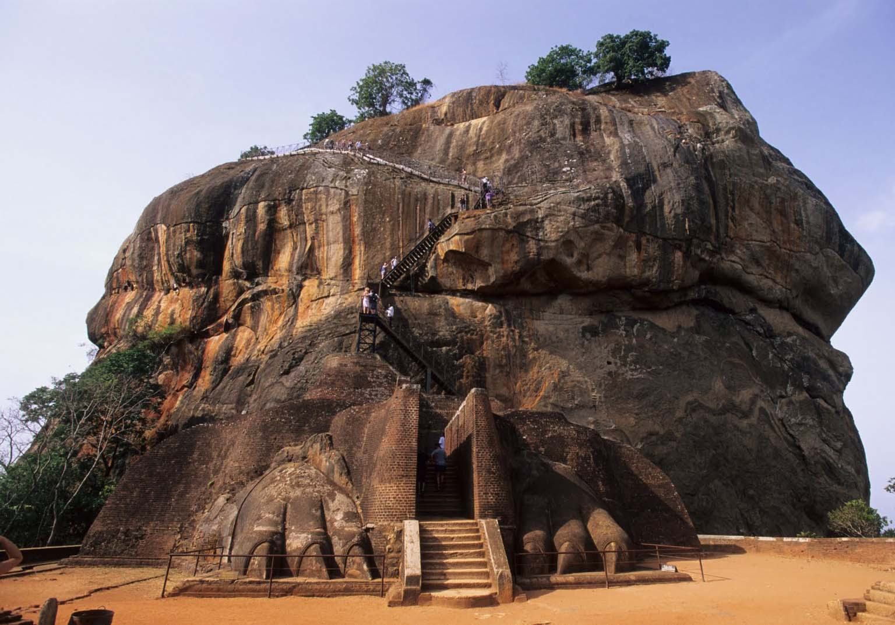
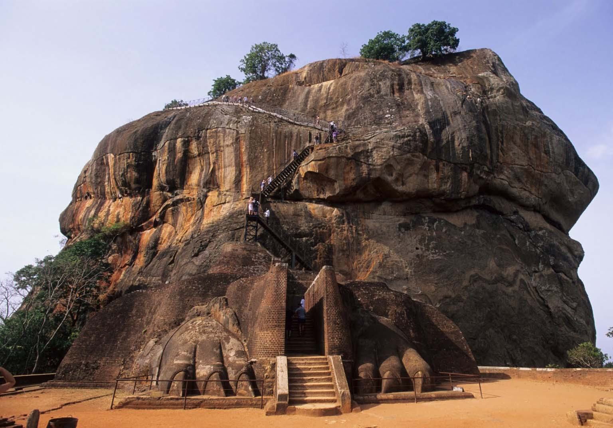

Sigiriya or the mount of remembrance is a World Heritage Site and one of the most stunning
places to see in Sri Lanka. This giant formation of rock rises out of nowhere towering over
everything in its vicinity. It is quite a climb to the top but once up there you will get to see a
panoramic view of the nearby sights and the Sigiriya fort. The rock fortress is a slice of
history
perched on a rock and is really worth a visit.
Not much is heard and said about Polonnaruwa, but this ancient city is no less than the Petra
of the south. A gem among Sri Lanka tourist
attractions, this ancient ruined city stands
amidst its erstwhile sturdy columns and architecture. The best way to explore this ancient
city is to hire a bike and zoom around the ruins.
The site is well maintained and is a telling
example of Sri Lankas history and culture. Polonnaruwa can be easily accessed via Sigiriya.
You can take a tuk-tuk or a bus from Sigiriya
Or you can take a bus from Dambulla to
Polonnaruwa.To Know More Click Here
Famous For: Rock Architecture
Things To Do: Trekking , View Point
Best Hotels to Stay: Jetwing Vil Uyana, Camelia Resort and Spa, Hotel Sigiriya,
Camellia Resort and Spa, and Lal Homestay
To Book Hotels Click Here
Map Location:Click Here To View Map Location